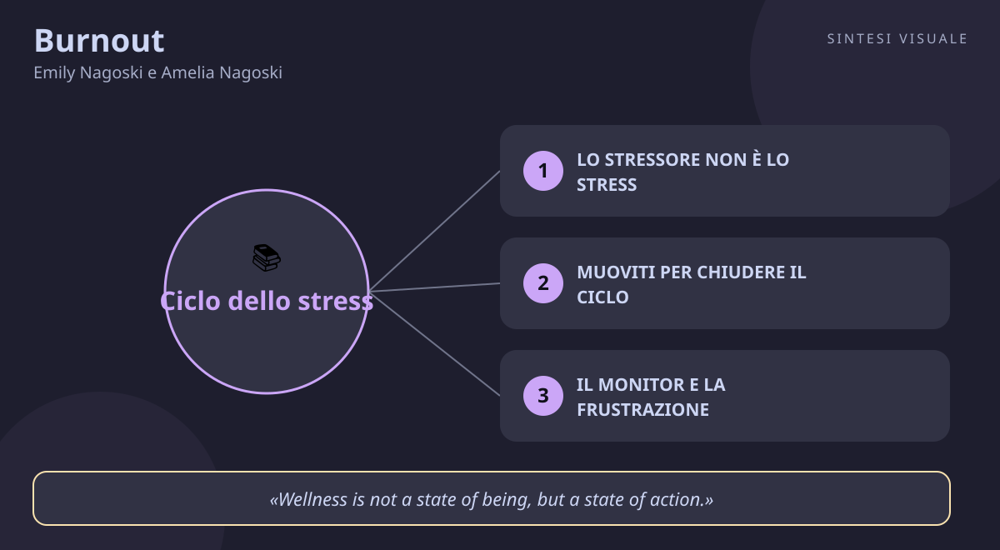

Burnout
Emily Nagoski e Amelia Nagoski · Gestione dello stress
«Burnout»
- Completa il ciclo
- Movimento
- Monitor
- Riposo
🧭Introduzione
Emily Nagoski — educatrice alla salute con un dottorato di ricerca, già autrice del bestseller Come as You Are — e sua sorella Amelia Nagoski — direttrice d'orchestra con un dottorato in musica, finita due volte in ospedale per infiammazioni provocate dallo stress cronico — sono due sorelle che hanno unito scienza e esperienza vissuta. La domanda che le tormenta è bruciante: perché ci sentiamo esauste e svuotate anche quando riusciamo a gestire tutto — lavoro, famiglia, scadenze — e perché "farcela" non ci fa sentire meglio?
Perché questo libro conta oggi: nel 2019, lo stesso anno di uscita del libro, l'Organizzazione Mondiale della Sanità ha inserito il burnout nella classificazione internazionale delle malattie come sindrome legata allo stress lavorativo cronico non gestito. Risolvere i problemi non basta a stare bene: bisogna scaricare dal corpo lo stress che i problemi hanno lasciato. È utile a chi lavora sotto pressione, a chi si prende cura di altri (genitori, figli, pazienti, clienti), a chi studia o vende — e a chiunque arrivi a sera scarico senza capire perché, visto che "ha fatto tutto".
📘Riassunto
La scintilla centrale: affrontare lo stressore (la mail difficile, il capo, le bollette) non elimina lo stress dal corpo; lo stress è un ciclo biologico — lotta, fuga o blocco — che va chiuso con il corpo, altrimenti si accumula per anni e ci ammala.
La struttura logica procede in tre movimenti. Prima parte, "Cosa ti porti dietro": completa il ciclo (la distinzione tra stressore e stress); #persist (il "Monitor", il meccanismo cerebrale che genera frustrazione quando lo sforzo non produce progressi); il significato (il tuo "Qualcosa di più grande" che ti fa attraversare il tunnel). Seconda parte, "Il vero nemico": il gioco è truccato (la sindrome della "donatrice umana", costretta a essere sempre bella, calma e disponibile); il "Bikini Industrial Complex" (l'industria che lucra sul farci sentire inadeguate nel corpo). Terza parte, "La tecnica": connettersi con gli altri; ciò che ti rende più forte (il riposo vero, a partire dal sonno); diventare forti (fare pace con la critica interiore, la "pazza in soffitta").
Il punto di svolta è il rovesciamento della logica del controllo: nel mondo moderno lo stress ti ucciderà più in fretta dello stressore, a meno che tu non faccia qualcosa per completare il ciclo. Non serve eliminare le cause — spesso impossibili da eliminare — serve dare al corpo ciò che gli serve per chiudere ogni ciclo attivato, come mangiare e dormire.
L'eredità oggi: bestseller del New York Times, tradotto in decine di lingue, diventato un punto di riferimento per psicologi, medici e coach. L'idea del "completare il ciclo" è entrata nel linguaggio della gestione dello stress accanto a Sapolsky (Perché alle zebre non viene l'ulcera, già trattato) e McGonigal (Il lato positivo dello stress, già trattato) — ma con un taglio unico: scientifico, pratico e profondamente umano.
💡Concetti chiave
- Lo stressore non è lo stress — risolvere il problema non scarica il corpo: il ciclo va chiuso a parte.
- Muoviti per chiudere il ciclo — l'attività fisica è la strategia più efficace, anche in piccole dosi.
- Il Monitor e la frustrazione — il cervello confronta sforzo e progresso: impara a gestirlo.
- Il significato è carburante — non è ciò che trovi alla fine del tunnel, è perché lo attraversi.
- Il riposo è cura, non premio — dormire e fermarsi non si guadagnano: sono medicine.
- Connessione e critica interiore — affetto, legami e gentilezza verso sé prevengono il burnout.
📖1. Lo stressore non è lo stress
- Definizione lo stressore è ciò che attiva la risposta (il cliente arrabbiato, la scadenza, il giudizio degli altri); lo stress è la reazione neurologica e fisiologica del corpo (adrenalina, tensione, cuore che batte). L'evoluzione ci ha programmati per scappare dal leone e poi rilassarci; oggi il "leone" sparisce dalla vista (mail inviata, riunione finita) ma il corpo resta in allarme. Decenni di cicli incompleti si accumulano dentro di noi.
- Esempio chiudi un reclamo difficile con un cliente: problema risolto, ma torni a casa con le spalle di pietra, lo stomaco chiuso e la testa che rimugina. Hai gestito lo stressore, non lo stress — e la notte dormi male.
- Come applicarlo ogni volta che chiudi una situazione stressante, chiediti "e adesso scarico il corpo?". Scegli un rituale di chiusura di 5–20 minuti: camminata, respirazione, stretching, pianto liberatorio, risata. Trattalo come lavarti le mani dopo aver toccato qualcosa di sporco.
- Errore comune credere che basti "ragionarci sopra" o risolvere il problema — il ciclo si chiude con il corpo e le emozioni sentite, non con i pensieri; rimuginare senza muoversi lo tiene aperto.
- Collegamento Robert Sapolsky (Perché alle zebre non viene l'ulcera, già trattato): le zebre scappano e poi pascolano tranquille — noi restiamo accesi; Dale Carnegie (Come vincere lo stress, già trattato): anche lui separava il problema dall'agitazione che ci costruiamo sopra.
📖2. Muoviti per chiudere il ciclo
- Definizione l'attività fisica è la strategia singolarmente più efficace per completare il ciclo di risposta allo stress: il movimento dice al cervello "siamo scappati, il pericolo è passato". Bastano 20–60 minuti al giorno per la maggior parte delle persone — e nei giorni peggiori anche saltare sul posto, ballare in cucina o fare una camminata veloce funzionano.
- Esempio dopo una giornata di trattative tese, invece di crollare sul divano con il telefono, fai 20 minuti di camminata veloce o di cyclette. Torni con il respiro più profondo, le spalle più basse e i pensieri più morbidi: non hai cambiato i problemi, hai cambiato il tuo stato.
- Come applicarlo programma il movimento come chiudi-stress quotidiano, non come "palestra da efficienti": una passeggiata dopo il lavoro, scale invece di ascensore, 5 minuti di stretching tra una chiamata e l'altra. Nei giorni di picco, muoviti prima di decidere qualsiasi cosa importante.
- Errore comune pensare "sono troppo stanco per muovermi, mi riposo guardando uno schermo" — lo schermo non chiude il ciclo, lo congela; la stanchezza da stress si scioglie col movimento leggero, non con l'immobilità.
- Collegamento Kelly McGonigal (Il lato positivo dello stress, già trattata): il movimento trasforma lo stress in energia utile; James Clear (Atomic Habits, già trattato): rendi il movimento ovvio e facile — scarpe pronte, percorso fisso — così diventa automatico.
📖3. Il Monitor e la frustrazione
- Definizione il "Monitor" è il meccanismo cerebrale che confronta continuamente sforzo e progresso verso un obiettivo: quando dai tanto e ottieni poco, genera frustrazione — l'emozione che ci fa mollare o esplodere. Non è un difetto: è un segnale. Il libro insegna a gestirlo con obiettivi piccoli e visibili, aspettative realistiche e il piano per "persistere" senza rompersi.
- Esempio venditore che fa 30 telefonate e non chiude nulla: il Monitor urla "inutile, smetti". Se invece l'obiettivo diventa "30 chiamate ben fatte, indipendentemente dall'esito", il cervello registra progresso e la frustrazione cala — e paradossalmente le chiusure arrivano.
- Come applicarlo spezza ogni obiettivo in passi così piccoli da poterli vincere ogni giorno; festeggia il passo, non solo il traguardo; quando la frustrazione sale, chiediti "il mio obiettivo di oggi era realistico?" e ridimensionalo invece di accusarti.
- Errore comune darsi obiettivi enormi e vaghi ("risolvo tutto entro venerdì") e poi leggere la frustrazione come prova di incapacità — è solo il Monitor che segnala un obiettivo mal disegnato.
- Collegamento Carol Dweck (Mindset, già trattata): la mentalità di crescita rilegge lo sforzo senza risultato come apprendimento, non come condanna; Angela Duckworth (Grit, già trattata): la perseveranza intelligente dosa lo sforzo invece di bruciarlo tutto subito.
📖4. Il significato è carburante
- Definizione il "Qualcosa di più grande" (Something Larger) è il senso che dà valore alla fatica: non è il premio alla fine del tunnel, è il motivo per cui entri nel tunnel. Chi ha un perché chiaro regge carichi doppi con metà usura; chi non ce l'ha si logora anche con poco. Il significato non elimina lo stress, ma lo rende sostenibile.
- Esempio due colleghi con lo stesso carico di straordinari: uno sa che sta pagando gli studi dei figli e costruendo la squadra, l'altro non sa più perché fa quel lavoro. A parità di ore, il secondo crolla per primo — non per il carico, per il vuoto.
- Come applicarlo scrivi in una frase il tuo "perché" per il periodo che stai vivendo ("tengo in piedi la squadra finché il progetto decolla"); rileggilo nei giorni duri; se non trovi nessun perché, è un segnale serio — parlane con qualcuno invece di stringere i denti.
- Errore comune cercare il senso della vita come rivelazione finale e intanto vivere senza direzione quotidiana — il significato è una bussola da usare ogni giorno, non un tesoro da trovare alla fine.
- Collegamento Viktor Frankl (L'uomo in cerca di senso, già trattato): chi ha un perché sopporta quasi ogni come; Simon Sinek (Start with Why, già trattato): partire dal perché orienta decisioni e energie.
📖5. Il riposo è cura, non premio
- Definizione le autrici sono categoriche: se cambi una sola cosa, dormi di più — il sonno è il fondamento di salute fisica, emotiva e relazionale. Il riposo non è la ricompensa per chi ha finito (non si finisce mai), è il requisito per funzionare. La cultura della "donatrice instancabile" — sempre disponibile, bella e calma — rende il riposo colpevole: va rovesciata.
- Esempio rimandi il sonno per finire "ancora una cosa" e il giorno dopo sei irritabile, dimentichi un appuntamento e litighi con un collega. Non ti manca organizzazione: ti mancano 7–8 ore di sonno e una pausa vera a metà giornata.
- Come applicarlo proteggi 7–8 ore di sonno come un appuntamento di lavoro inamovibile; inserisci ogni giorno una pausa attiva di riposo (niente schermi: passeggiata, musica, chiacchiere); una volta a settimana, concediti mezza giornata senza "doveri utili" e osserva il senso di colpa senza obbedirgli.
- Errore comune riposarsi solo quando si è già crollati — il riposo da emergenza ripara poco e conferma l'idea che fermarsi sia da deboli; il riposo preventivo è quello che previene il burnout.
- Collegamento Cal Newport (Deep Work, già trattato): il lavoro profondo richiede riposo profondo, altrimenti la concentrazione muore; Greg McKeown (Essentialism, già trattato): proteggere ciò che è essenziale significa dire no anche a cose buone.
📖6. Connessione e critica interiore
- Definizione l'affetto completa il ciclo: un abbraccio di 20 secondi con una persona fidata, un bacio di 6 secondi, una risata incontenibile con amici, perfino accarezzare un gatto dicono al cervello "il mondo è un posto sicuro". E dentro di noi vive la critica interiore — la "pazza in soffitta" — che ci insulta quando cadiamo: va trattata con gentilezza ferma, come faresti con un'amica, non con obbedienza.
- Esempio dopo una presentazione andata male, la voce interiore dice "sei imbranato, fai sempre figure così". Invece di crederle, la riconosci ("ecco la pazza in soffitta"), chiami un collega fidato, ne ridete insieme per cinque minuti — e il ciclo si chiude invece di avvelenarti la settimana.
- Come applicarlo programma ogni settimana almeno due contatti caldi veri (non chat di lavoro): cena, telefonata, passeggiata con chi ti vuole bene; quando la critica interiore attacca, rispondile per iscritto come risponderesti a un amico nelle stesse condizioni.
- Errore comune isolarsi proprio quando si sta male ("non voglio pesare sugli altri") e trattare la voce interiore come verità — sono le due mosse che trasformano una brutta giornata in burnout.
- Collegamento Daniel Goleman (Intelligenza emotiva, già trattata): le relazioni sono regolatori emotivi potentissimi; Marshall Rosenberg (Le parole sono finestre, già trattato): parlare a sé stessi con osservazioni invece che giudizi disarma la critica interiore.
💬Citazioni da ricordare
"Dealing with your stress is a separate process from dealing with the things that cause your stress." — Conta perché è la frase-chiave del libro: separa per sempre il problema (da risolvere) dallo stress (da scaricare).
"Wellness is not a state of being, but a state of action." — Conta perché smonta il mito del benessere come traguardo: il benessere è ciò che fai ogni giorno, non ciò che raggiungi una volta.
"Just because you've dealt with a stressor, that doesn't mean you've dealt with the stress itself." — Conta perché spiega le sere in cui hai "risolto tutto" e stai comunque male: manca la chiusura del ciclo.
Nel mondo moderno lo stress ti ucciderà più in fretta dello stressore, a meno che tu non faccia qualcosa per completare il ciclo. E ancora: il benessere non è uno stato da raggiungere, ma un'azione da compiere ogni giorno. Infine: riposo, connessione umana e gentilezza verso la propria voce interiore sono le chiavi per uscire dal burnout e non ricaderci.
🌍Esempi di oggi
- La sera dopo la riunione infinita — Il problema è risolto ma hai le spalle contratte e la testa che ripete la discussione. Dieci minuti di camminata all'aria aperta o una doccia calda con respiri lenti chiudono il ciclo meglio di un'ora di rimugino sul divano.
- Il venditore a fine mese — Trenta chiamate, zero chiusure, il Monitor urla "molla tutto". Chi ha spezzato l'obiettivo in passi quotidiani celebra le chiamate ben fatte e regge; chi misura solo il fatturato si frustra e il mese dopo chiama peggio.
- La domenica sera con l'ansia del lunedì — Invece di controllare le mail "per portarti avanti", fai una cena vera con persone care e vai a letto presto. Il lunedì non sarà più leggero nei problemi, ma tu arriverai con il corpo scarico invece che già in allarme.
🛠️Azioni pratiche
- Chiudi un ciclo al giorno con il corpo: dopo la situazione più stressante di ogni giornata, fai 10–20 minuti di movimento (camminata, ballo, scale, stretching) prima di sederti sul divano. Segna su un foglio per 7 giorni: stressore, movimento fatto, come ti senti dopo.
- Proteggi il sonno come un cliente importante: per 7 notti vai a letto a un'ora fissa che garantisca 7–8 ore, telefono fuori dalla camera. Annota ogni mattina energia e umore da 1 a 10: vedrai il legame con le tue reazioni alle difficoltà.
- Prenota due connessioni calde: chiama o incontra due persone di cui ti fidi, senza agenda di lavoro — e la prossima volta che la critica interiore ti attacca, scrivile la risposta che daresti a un amico. Porta il foglio con te e rileggilo quando serve.
💎Da portare a casa
Non basta risolvere i problemi: devi scaricare dal corpo lo stress che lasciano — muoviti, riposa e fatti aiutare, ogni giorno.
Vuoi approfondire? Rispondi in chat con il numero del concetto (1–6) che vuoi esplorare — ciclo dello stress, movimento, Monitor, significato, riposo o connessione e critica interiore — oppure chiedimi come applicare le idee delle sorelle Nagoski a una tua situazione reale: lavoro, vendite, studio, famiglia o gestione di un team sotto pressione.
🖼️In un colpo d’occhio

Tocca l’immagine per ingrandirla.